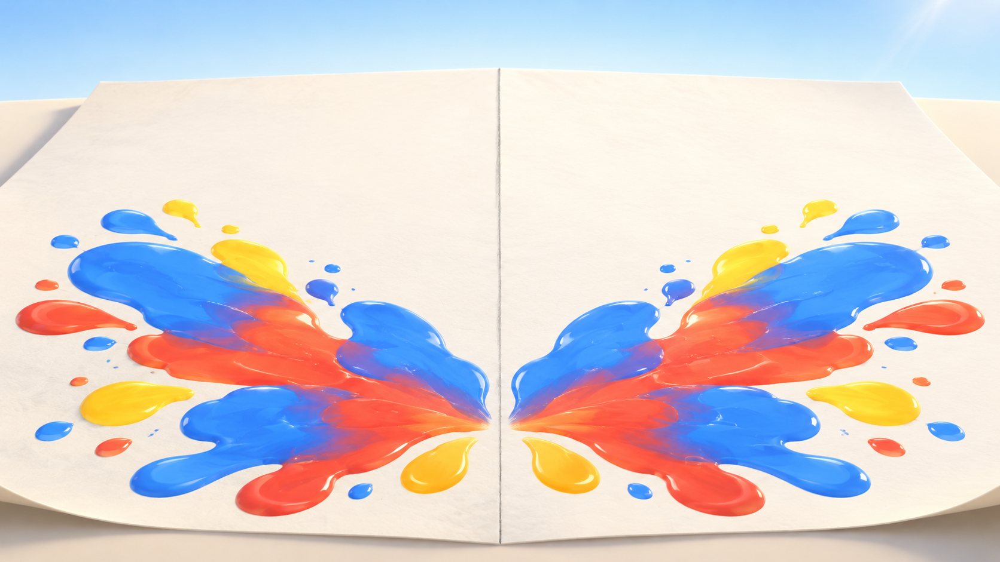
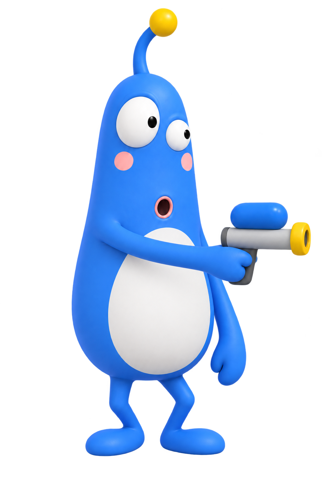
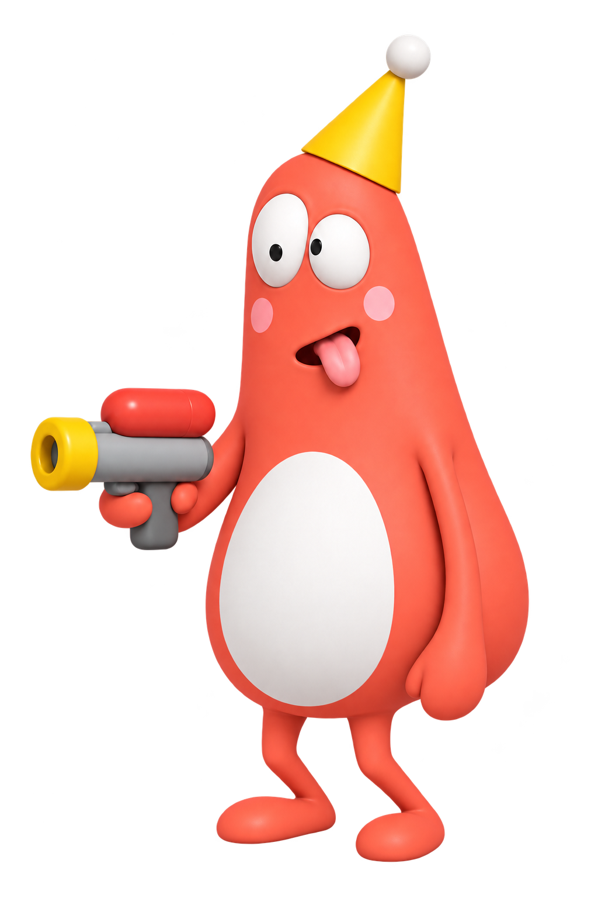

A
플레이어 A
100
준비
➜
바람 없음
B
플레이어 B
100
내 구역을 클릭해서 물감총 발사! 바람에 밀린 자리가 접혀서 상대 구역에 찍혀요. 멀리 쏠수록 바람을 더 타요.
설정
위에서 보기
소리 켜짐
다시 시작
설정
한 판 더!
데칼
코마니
게임
체력전
표지판 레이스
표지판 수
4개
6개
8개
상대
AI 대결
친구와 (한 화면)
온라인 대전
AI 실력
쉬움
보통
어려움
고수
온라인
방 만들기
참가
초대 링크
복사
빠른 설정
쉬운 판
보통 판
어려운 판
물감폭탄
크게
보통
작게
바람
없음
약하게
보통
강하게
맵 크기
작게
보통
크게
지형
평지
언덕
산
캐릭터 위치
직접 이동
자동 이동
접는 방향
좌우
상하
계속하기
시작!

데칼
코마니


시작
불러오는 중…